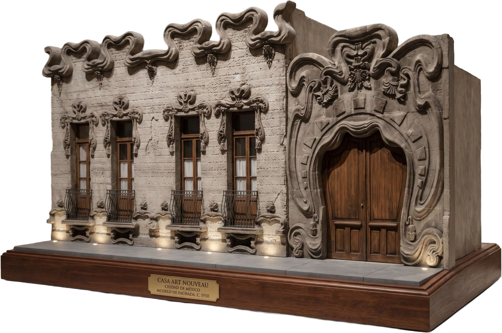
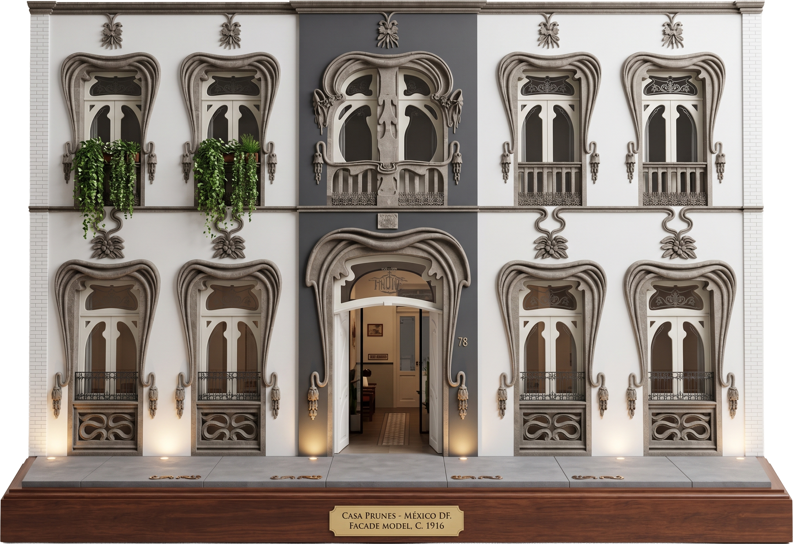
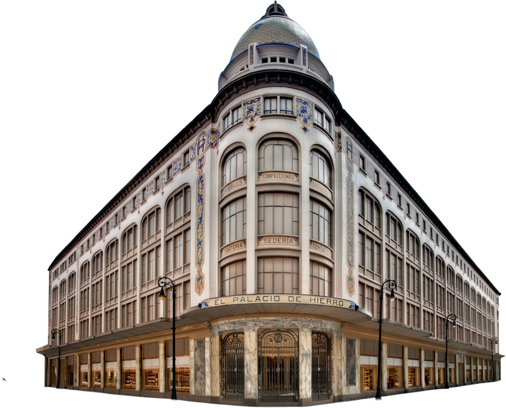
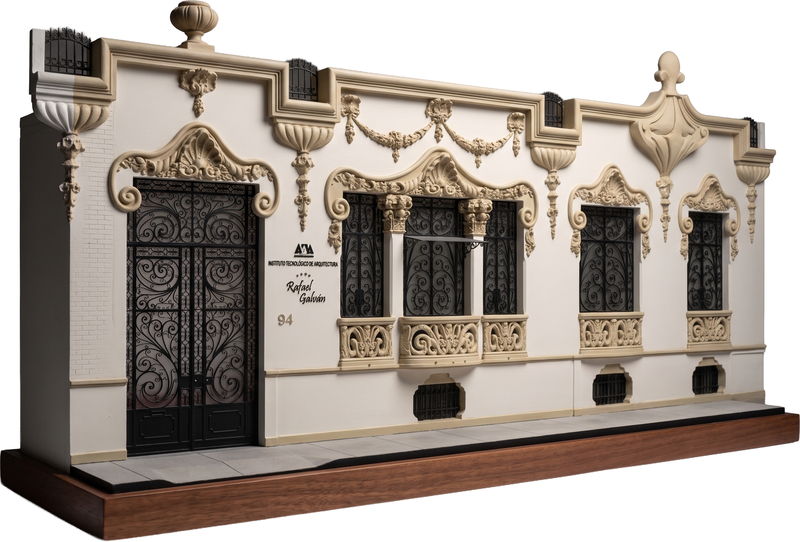
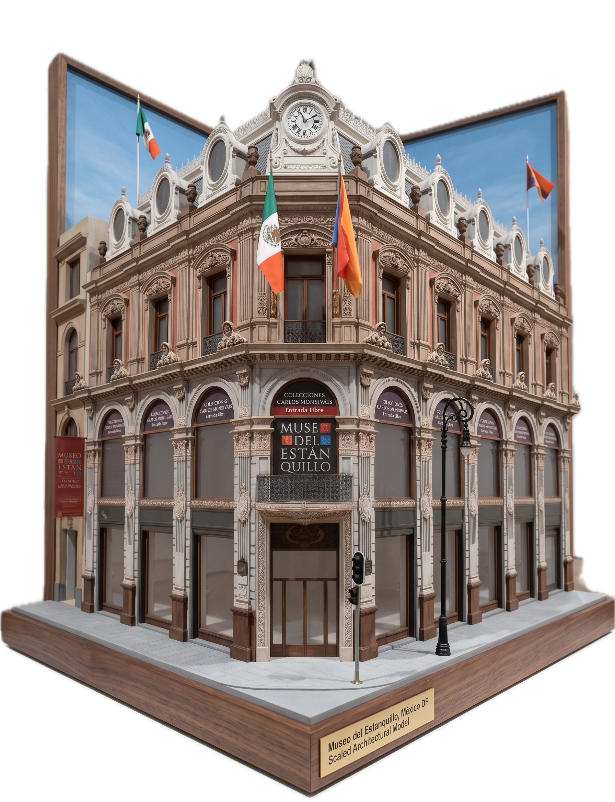

Art nouveau en la arquitectura
Surgido como un estilo totalmente nuevo, sin referencias historicistas, el art nouveau, también conocido como “modernismo”, tuvo un profundo impacto. El arte, el diseño gráfico, la moda, la joyería, los textiles, la arquitectura, el interiorismo y el mobiliario: todos los elementos imaginables recibieron una influencia del nuevo lenguaje visual. Caracterizado por sus formas fluidas y sus líneas orgánicas y sinuosas, a menudo con motivos vegetales o elementos figurativos femeninos, el estilo suele adoptar principios estéticos asimétricos.

Características principales de la arquitectura de estilo Art Nouveau:
- Asimetría
- Ondulaciones
- Líneas serpentinas
- Elementos orgánicos
- Ornamentación sinuosa
- Formas fluidas

El art nouveau llegó a México en las últimas décadas del porfiriato, cuando la élite buscaba alinear la imagen del país con las vanguardias europeas y convertir la capital en escaparate de modernidad ante el comercio extranjero. Se introdujo casi en paralelo a su auge en Europa, principalmente a través de las artes decorativas, el mobiliario y detalles arquitectónicos, más que como una corriente enseñada académicamente: de hecho no se impartía en las academias, en parte por ser una reacción contra el eclecticismo del siglo XIX.
En la Ciudad de México se manifestó sobre todo como ornamentación —herrería, vitrales y curvas vegetales— aplicada a fachadas e interiores, rara vez como concepción total del edificio. El ejemplo más temprano y radical fue la Casa Requena, en la colonia Guerrero, reformada hacia 1895 con diseños del pintor catalán Ramón Casas; lo siguieron el interior del Centro Mercantil —hoy Gran Hotel Ciudad de México— y el proyecto original de Adamo Boari para el Teatro Nacional, que devendría en el Palacio de Bellas Artes. También aparece en el Edificio Esmeralda —hoy Museo del Estanquillo— y en El Palacio de Hierro antes de su incendio.


El estilo tuvo mayor fuerza fuera del Centro que dentro: colonias como la Roma concentran varios inmuebles habitacionales de entre 1916 y 1920, y el ejemplo más celebrado a nivel nacional está en Chihuahua, la Quinta Gameros, no en la capital. En la Ciudad de México casi no sobreviven obras completas del estilo: la Casa Requena se derrumbó en 2005, y lo que queda son fachadas o interiores parciales dentro de edificios de otros estilos dominantes.

Conoce más sobre losedificios en las distintas
zonas de CDMX